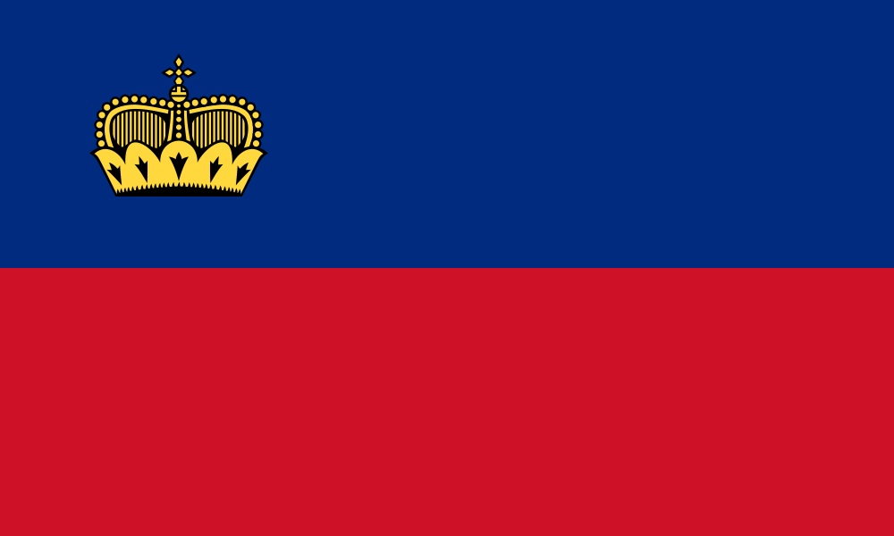
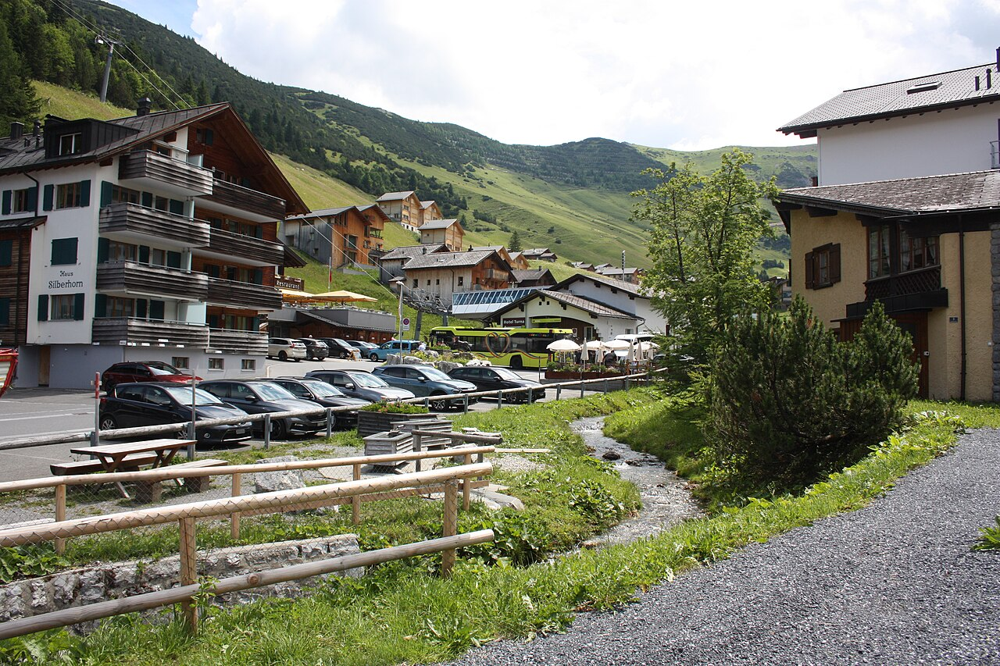
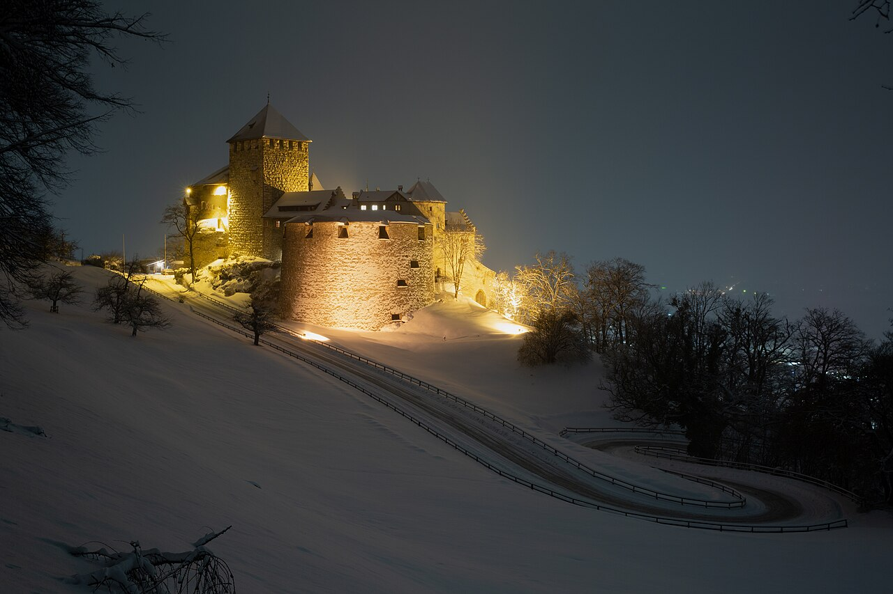
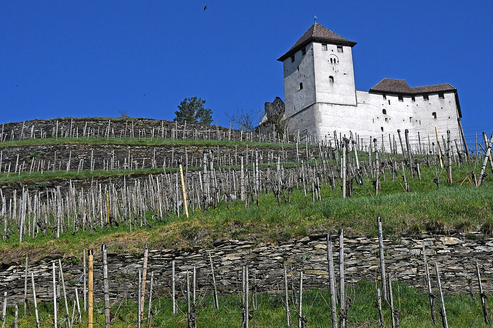
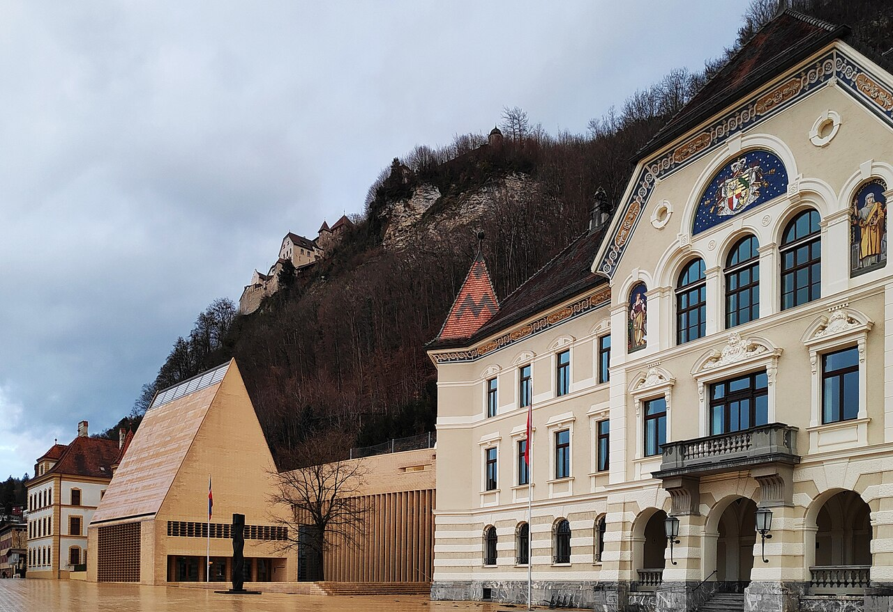

A tablóm témája Liechtenstein. Ez egy nagyon kicsi ország Európában, Svájc és Ausztria között. Előtte nem sokat tudtam róla, ezért választottam, hogy többet megtudjak.
Adatok
| Főváros | Vaduz |
|---|---|
| Terület | 160 km² |
| Lakosság | kb. 39 000 fő |
| Nyelv | német |
| Pénz | svájci frank |
| Államforma | alkotmányos monarchia |
| Mióta létezik | 1719 |

A zászló kék és piros, a sarkában egy korona van. A koronát 1937-ben rakták rá, mert Haitinak ugyanilyen zászlaja volt.
Földrajz

Liechtenstein az Alpokban van, a Rajna mellett. Nyugaton Svájc, keleten Ausztria a szomszédja. A területe 160 km², ez kisebb, mint Budapest.
A Rajna mellett lapos a terület, itt van a legtöbb város. Keleten hegyek vannak, ott van például Malbun, ahol síelni is lehet.
11 községből áll. A legnagyobb Schaan, a főváros Vaduz.
Látnivalók

Vaduz vára
Itt lakik a herceg és a családja. Egy sziklán van a város felett. Belülről nem lehet megnézni.

Vaduz
A főváros, de csak kb. 5700 ember lakik benne. Vannak múzeumok és boltok.

Gutenberg vár
Középkori vár Balzersben, egy dombon áll.

Parlament
A parlament neve Landtag. Az épület Vaduzban van, elég modern.
Történelem
| Év | Mi történt |
|---|---|
| 1699 | A Liechtenstein család megveszi Schellenberget. |
| 1712 | Megveszik Vaduzt is. |
| 1719 | A két területből hercegség lesz, ez Liechtenstein. |
| 1806 | Független ország lesz. |
| 1868 | Megszüntetik a hadsereget. |
| 1921 | Új alkotmány. |
| ma | Az államfő II. János Ádám herceg. |
Érdekességek
- Nincs repülőtere, a legközelebbi Zürichben van.
- 1868 óta nincs hadserege.
- Csak két olyan ország van, ahonnan két országon kell átmenni, hogy elérd a tengert. Az egyik Liechtenstein, a másik Üzbegisztán.
- Híresek a bélyegei.
- Malbunban lehet síelni.